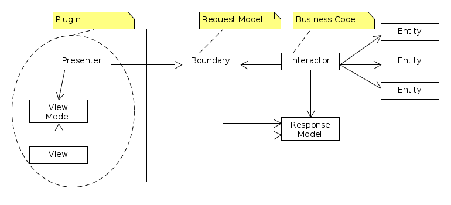
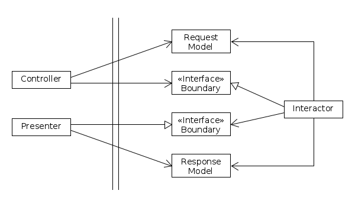
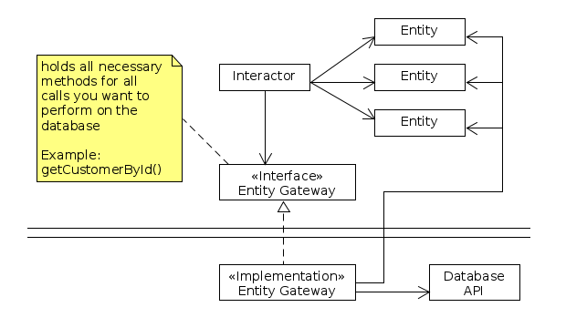
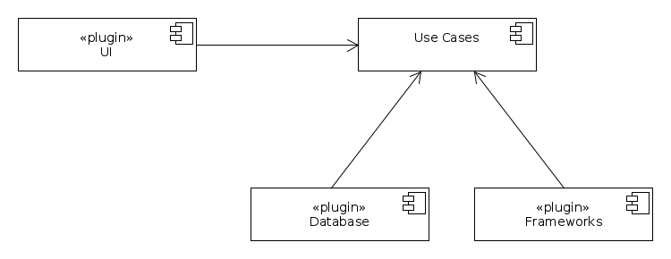

Links
Inhalt
- Use Use Cases as basic software design element!
Use the simplest way of Use Case description; concentrate on the standard
process, e.g. the good case.
- Build up from Use Cases your Business Code (aka: Use Cases code).
- Create your Business Code from the beginning testable
and implement good Unit Tests!
- Don't let frameworks rule your architecture - be independent from
frameworks as much as possible!
- A good architecture allows major decisions to be deferred!
- A good architecture maximizes the number of decisions not made.
- Using a Plugin Model helps isolating Use Cases Code from
presentation and persistance.
- Don't use Dependency Injection for all your code and classes.
Instead just inject factories! Use factories for e.g. strategies
and plugins.
Finally you might inject in a software project about a dozen or max two
dozens of factories. For those injections you even don't need a Dependency
Injection framework - do the injections manually!
Besprochene Diagramme:
- Model View Presenter

- ENCHILADA

- Isolate Database

- The Plugin Model (component diagram)
